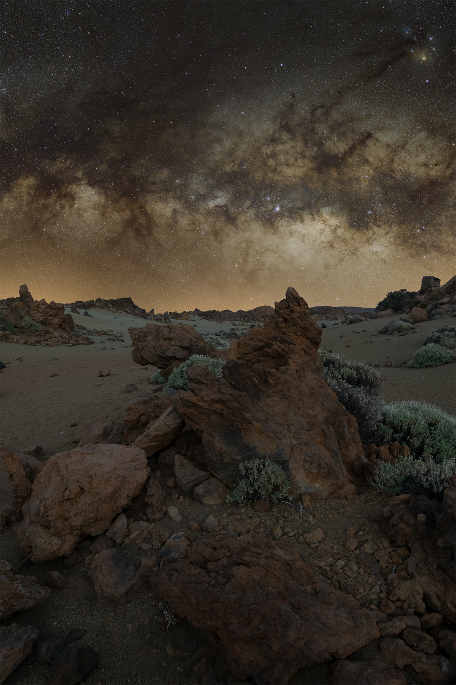

Milky Way over the Volcanic Landscape of Tenerife

Acquisition Details
| Filter | Exposure | Count | Total |
|---|---|---|---|
| None | 90s | 32 | 48m |
| Total Integration | 48 minutes | ||
- Lens: Sigma 16mm F1.4
- Camera: Sony A6000
- Mount: SkyWatcher Star Adventurer 2i
About the Target
During a week in Tenerife I spent one night photographing in Minas de San José, a volcanic area in Teide National Park at an elevation of roughly 2200 meters. The landscape there is scattered with lava formations and small shrubs shaped by past eruptions from Mount Teide and the surrounding volcanic fields. The park is well known for its dark skies and high elevation, making it a popular location for night sky photography.
In February the galactic core only rises modestly above the southern horizon from this latitude. During this session it reached roughly 20–25 degrees above the horizon before dawn, gradually revealing more of the central Milky Way and its dust lanes as it cleared the distant volcanic ridges.
While setting up that night I discovered that the intervalometer I had brought had a faulty cable, which meant running an automated sequence was not possible. Instead I used a shutter release with a hold function and triggered each exposure manually while staying beside the camera throughout the sequence.
In total I captured 49 exposures during the night. Because the foreground terrain covered a significant portion of the Milky Way in the earliest frames, I ultimately selected 32 exposures that best matched the final composition as the galaxy climbed higher in the sky.